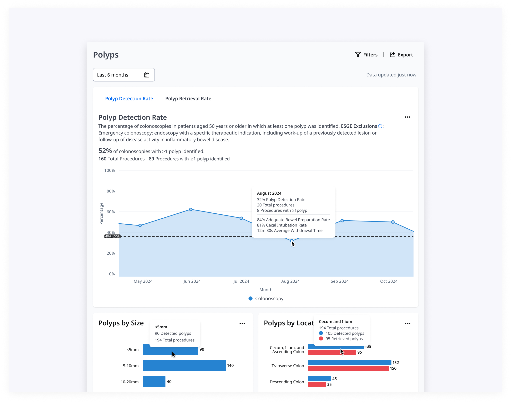
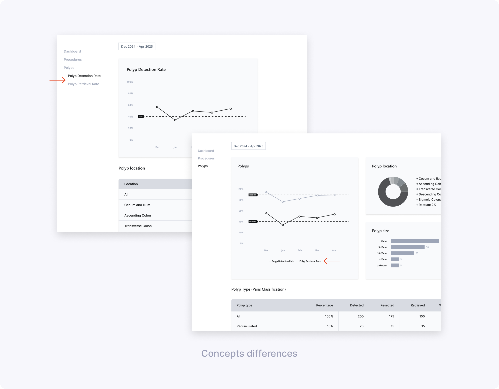
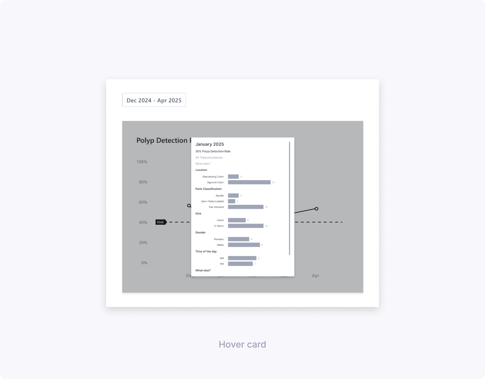
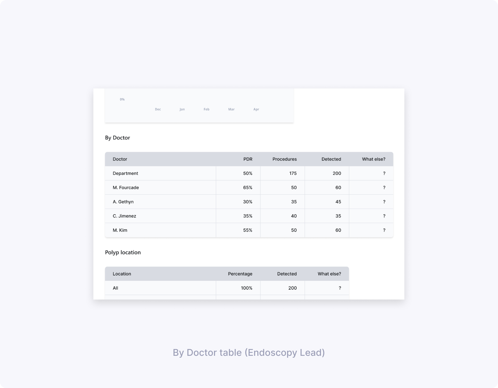
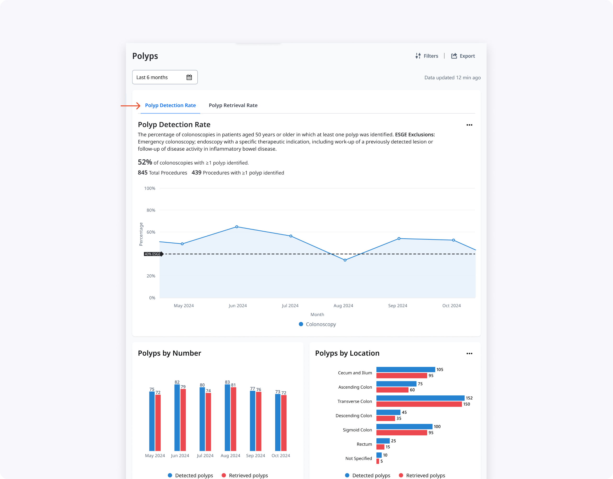
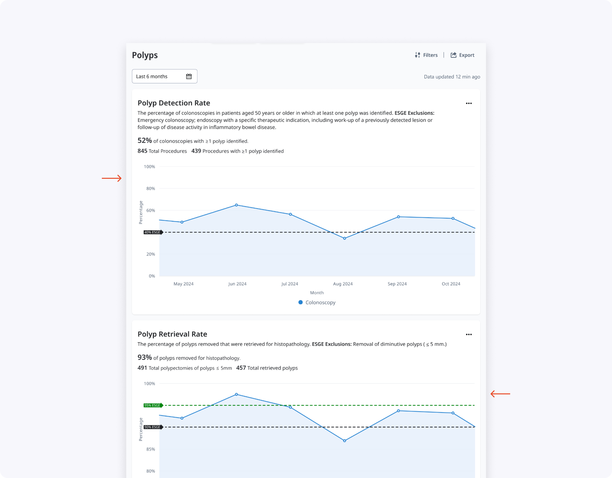
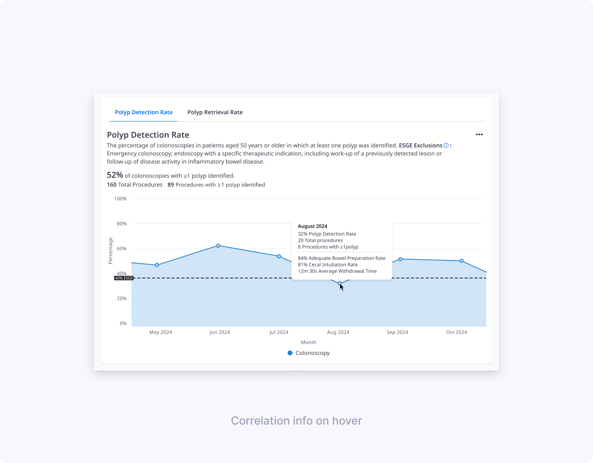
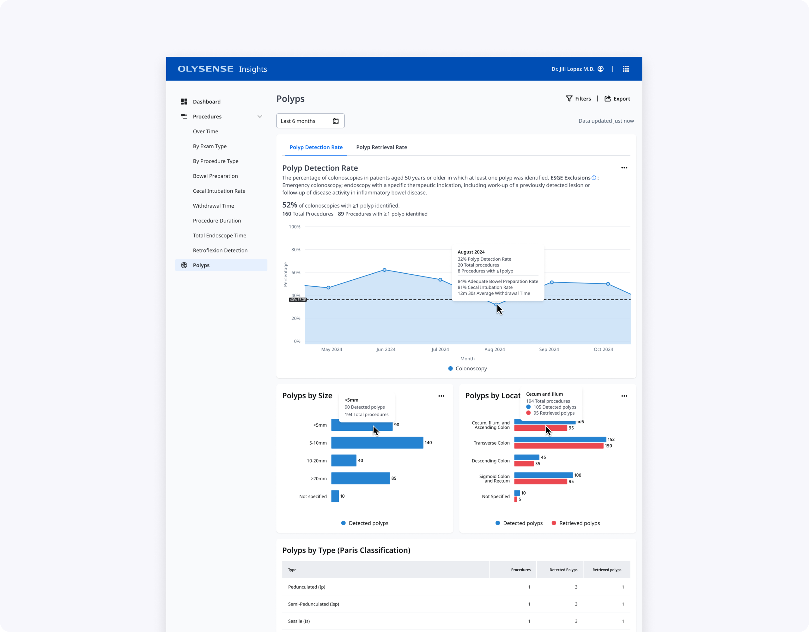
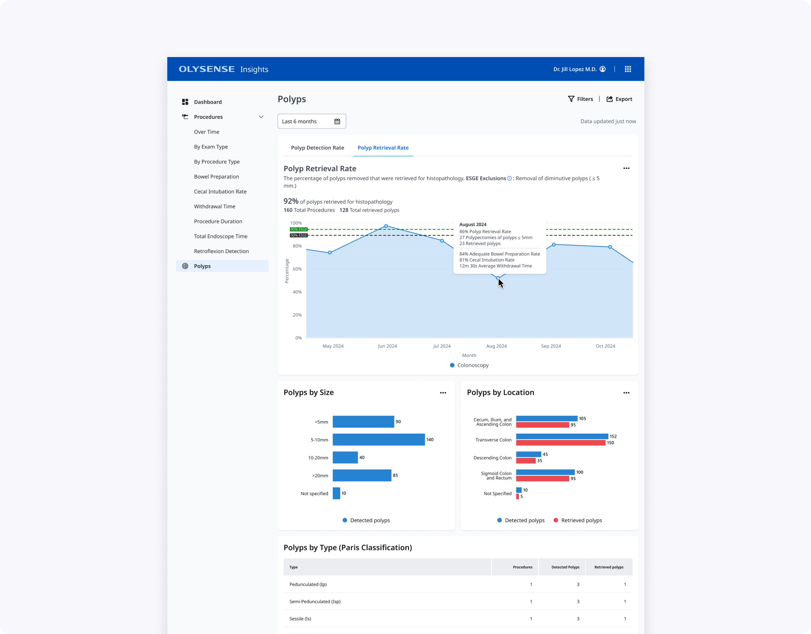

Contribution
I led the end‑to‑end product design—from translating complex guidelines into UX requirements, to low‑ and high‑fidelity testing with clinicians in multiple hospitals. The experience focuses on ESGE‑defined (European Society of Gastrointestinal Endoscopy) metrics like Polyp Detection Rate (PDR), Polyp Retrieval Rate (PRR), morphology description, and appropriate polypectomy technique.

Understanding polyps & users
I started from a detailed discovery report summarizing ESGE quality metrics for polyps, including PDR, PRR, adequate morphology description, and appropriate polypectomy technique. I translated these into two primary personas: endoscopists improving their own performance, and endoscopy leads monitoring department‑level quality and outliers.
Together with our UX Researcher, I distilled user needs into three core questions: “Am I compliant with ESGE standards?”, “What kinds of polyps am I detecting, resecting, and retrieving?”, and “What might be driving high or low scores over time?”.

Low‑fidelity exploration & testing
Based on the discovery findings, I sketched multiple ideas for the Polyps experience and built low‑fidelity Figma prototypes. The concepts varied on core questions: one vs two pages, charts vs tables, and how much polyp detail (size, location, classification, resection method) clinicians needed surfaced by default.
Together with our UX Researcher, I co‑created the low‑fi research brief and discussion guide, and we ran 60–90 minute remote sessions with 10 clinicians (endoscopists and endoscopy leads) across Spain and Germany. During these interviews we compared a split PDR/PRR experience with a unified “all polyps” page and evaluated hover cards and modals that exposed more contextual data per month.
Key learnings:
- Clinicians preferred a single Polyps page that told the full story of detection, resection, and retrieval rather than separate PDR and PRR pages.
- Polyp Location and Size worked best as charts for quick at‑a‑glance understanding, with tables used later for deeper analysis.
- Bowel preparation score (BBPS), number of procedures, and cecal intubation rate were critical context for interpreting changes in PDR; BBPS and procedure count were particularly helpful for PRR.
- Polyps by gender was perceived as low‑value and a good candidate to remove from future iterations.



High‑fidelity candidates & usability
Using our OlySense design system, I translated validated directions into high‑fidelity prototypes exploring two main layouts: a tabbed Polyps page and a long scroll with stacked graphs and tables. We framed a usability study to see how well each design supported real tasks such as finding current PDR/PRR, understanding why scores changed, and exploring polyp characteristics by type, size, and location.
I co‑authored the hi‑fi UXR plan, brief, and discussion guide, then co‑moderated 60‑minute remote usability sessions with seven clinicians (endoscopists and endoscopy leads) across three hospitals. In each session we asked participants to complete core tasks—like explaining a PDR drop in a specific month—and observed how the different layouts, charts, tables, and hover states helped or hindered them.
Key findings:
- The tabbed layout (Concept 1) reduced cognitive overload and made the hierarchy clear, prioritizing PDR while keeping PRR accessible, though the PRR tab needed stronger visual affordance.
- Participants consistently preferred visual graphs for By Size and By Location, while tables remained more useful for dense details like By Type and By Resection Method.
- Information like “By Number” and “By Time of Day” added noise and did not meaningfully help clinicians improve their PDR/PRR, so we decided to remove them.
- Clinicians reason about polyp size in ranges rather than exact millimeters, so we grouped sizes into <5 mm, 5–10 mm, 10–20 mm, and >20 mm.
- To simplify the location chart while keeping clinical signal, we merged small segments into broader regions (for example, cecum + ileum + ascending colon, and sigmoid + rectum).



Final Design & Impact
The final design is a single Polyps page with PDR/PRR tabs, an at‑a‑glance PDR trend line against ESGE thresholds, and focused supporting charts and tables. Endoscopists can quickly see where they fall below guidelines, explore potential drivers in hover cards and By Size/By Location graphs, and then drill into polyp type and resection method when they need more detail.
Endoscopy leads get an additional By Doctor table that surfaces PDR and PRR per clinician, helping them identify outliers and prioritize coaching. Together, these changes make polyps data more actionable while respecting clinicians’ time and cognitive load during quality review.


What I’d explore next:
- Integrating histology data (e.g., adenoma types) so clinicians can connect detection quality with pathology outcomes, not just process metrics.
- Configurable views for smaller practices that do not use the full classification and resection method set, reducing noise for those environments.
Thanks for reading!